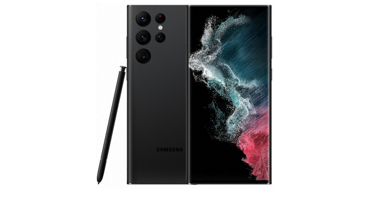
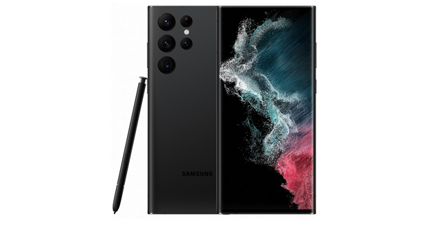
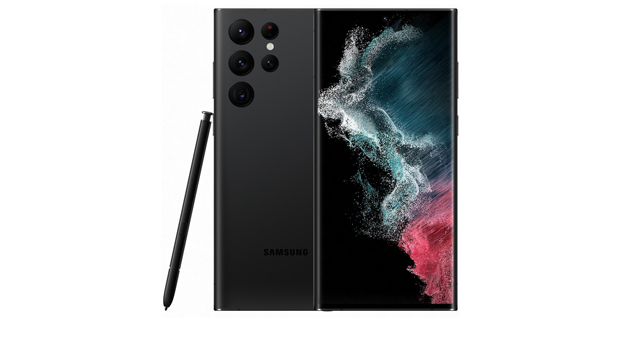
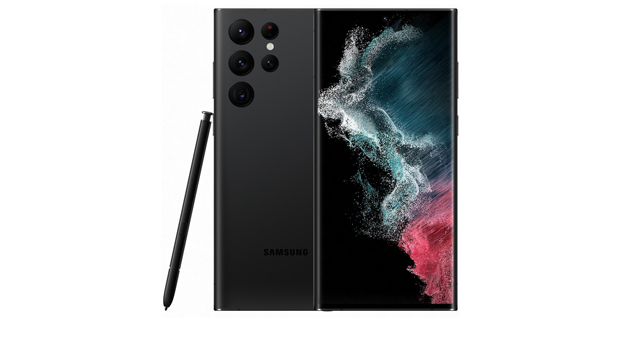

 

В данную группу смартфонов входят наиболее передовые устройства с максимальной производительностью, дисплеем высокого разрешения, широкими возможностями в плане фото и видеосъемки и большим объемом памяти. Такие смартфоны первыми получают инновационные технологии. Обратной стороной медали является высокая цена.
Смартфон iPhone 14 Pro Max обрел улучшенную систему камер и дисплей с поддержкой функции Always-On. Применен фирменный производительный чип A16 Bionic, содержащий шесть CPU-ядер, пять ядер GPU и 16-ядерный нейронный блок. Поддерживается беспроводная зарядка по стандарту Qi. Кроме того, у iPhone 14 Pro Max предусмотрена защита от влаги и пыли IP68.
Смартфон Galaxy S22 Ultra получил стилус, который прячется в корпус. Здесь также мощный процессор с восемью ядрами и все возможности экосистемы Samsung. Установлен дисплей Dynamic AMOLED 2X с технологией Vision Booster, пиковой яркостью 1750 нит и адаптивной частотой обновления до 120 Гц. Реализована беспроводная зарядка Wireless PowerShare и быстрая зарядка мощностью 45 Вт.
Флагман Xiaomi с тройной камерой Leica, реверсивной беспроводной зарядкой и с дисплеем с частотой 1−120 Гц и яркостью 1500 нит. Смартфон Xiaomi 12S Ultra оснащен редкой 1-дюймовой матрицей в камере, а сертификат IP68 означает защиту от влаги и пыли. Для отвода тепла служит совершенно новая система 3D-охлаждения.
Google снова врывается в мир смартфонов. На этот раз — с продвинутой камерой с 5-кратным зумом, новым дизайном и собственным процессором Google Tensor G2. Смартфоны данной серии используют новейшую версию Android. Частота обновления дисплея Pixel 7 Pro варьируется в диапазоне от 10 до 120 Гц. У смартфонов предусмотрена защита от влаги и пыли по стандарту IP68.
Обновление нашумевшего Honor 50. Первый в мире смартфон с сенсором Sony IMX800. Аппарат получил легкий и тонкий корпус из стекла (178 г). С нуля до 60% заряжается за 20 минут, до 100% — за 45 минут. Есть стереодинамики и встроенный в дисплей сканер отпечатков пальцев. Смартфоны Honor 70 поддерживают работу в мобильных сетях 5G SA/NSA.